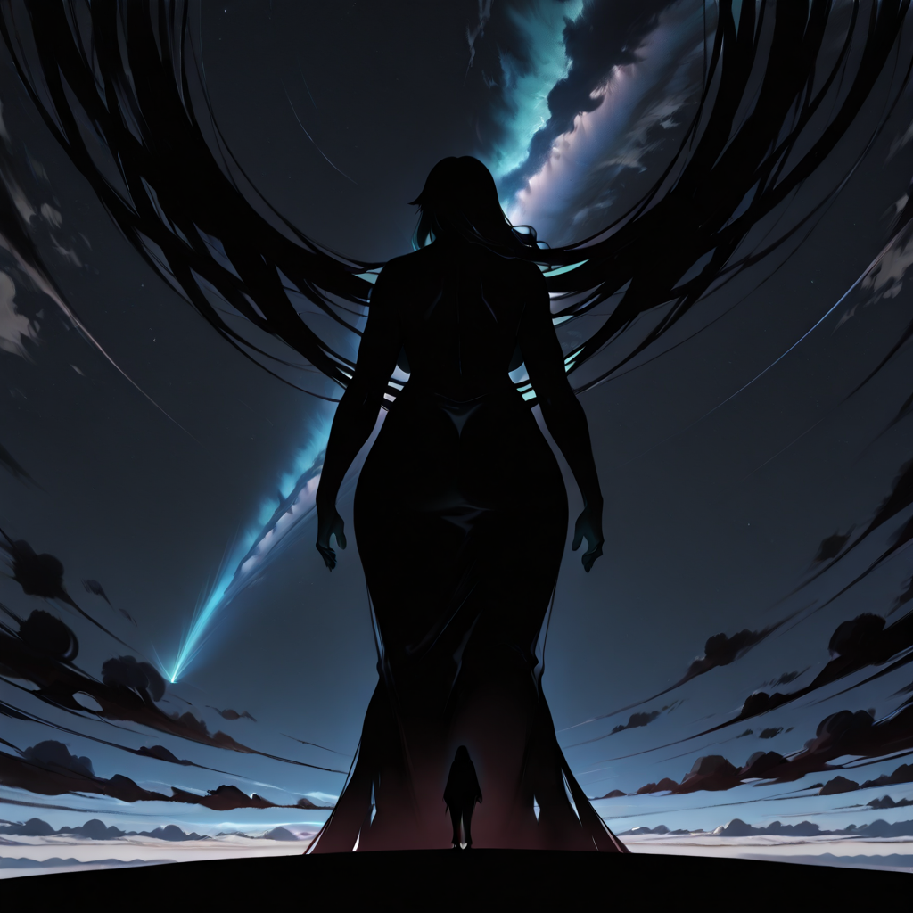
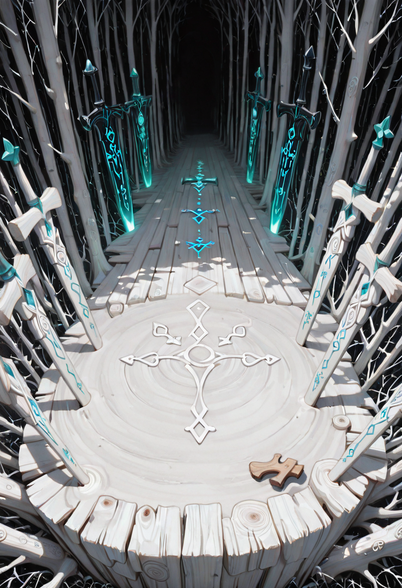
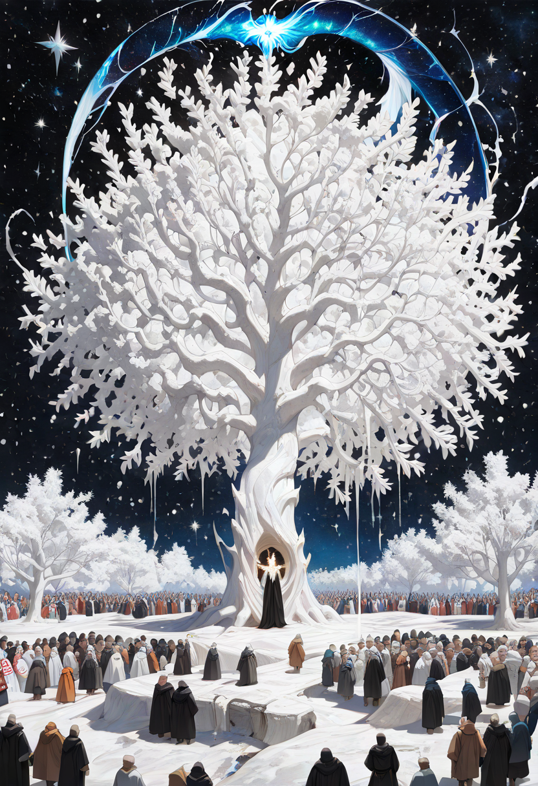
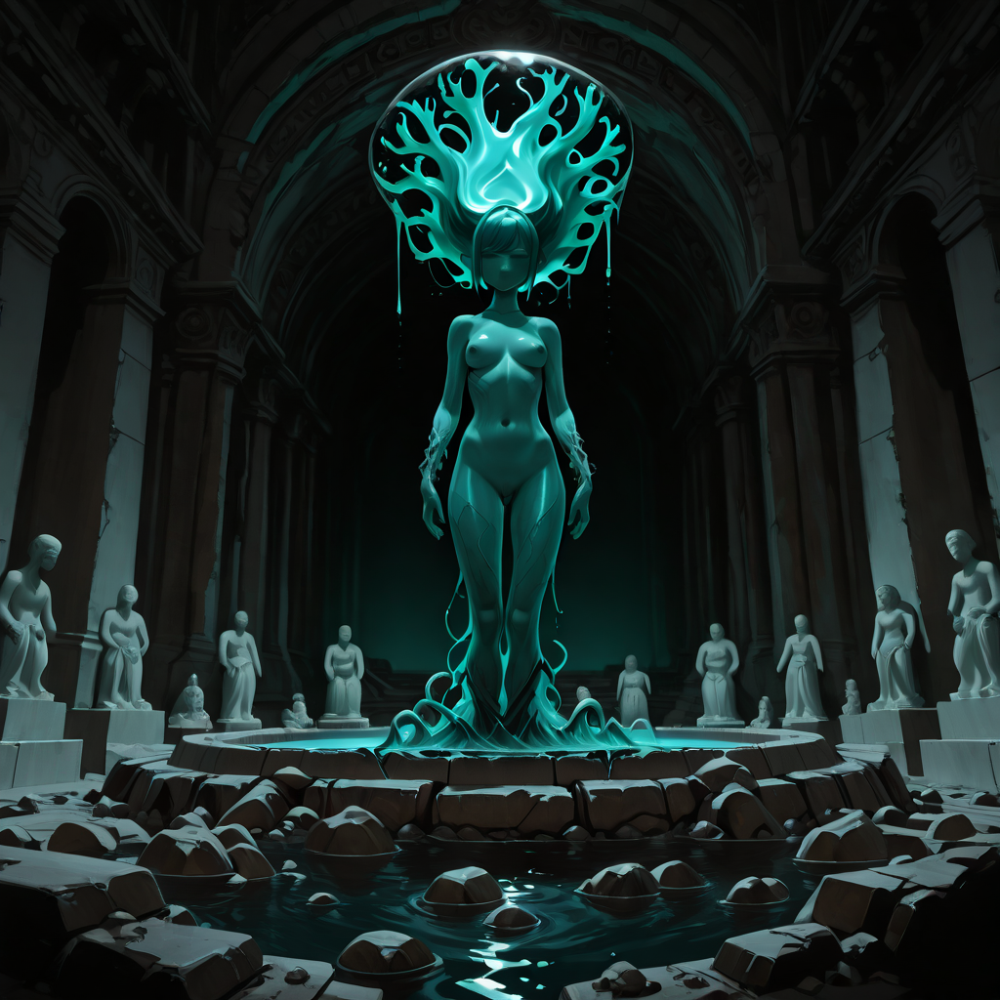
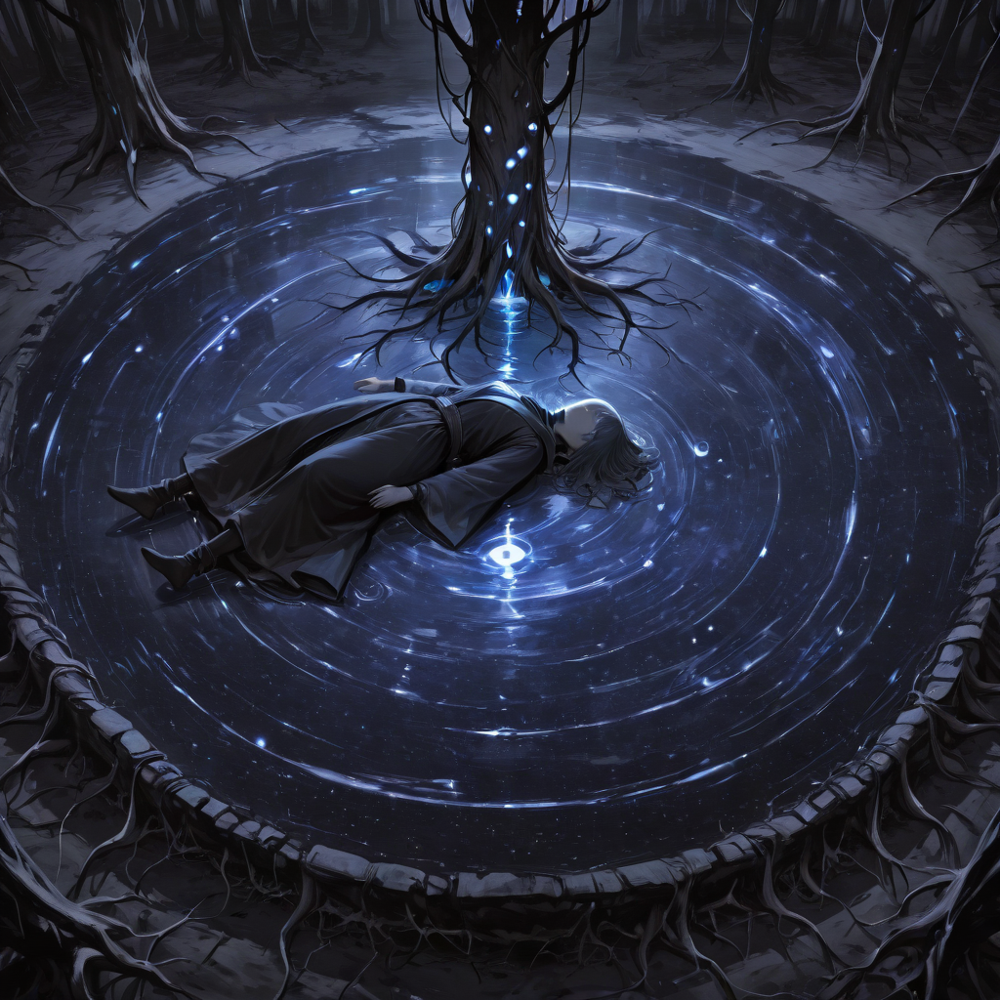

She does not rule by decree, she does not speak, and she does not interact with the people on a daily basis. Yet everything in the Empire of the Forgotten begins and ends with her.

The Root Mother
Malicott was once a traditional deity, now she has become something different: an ancient, biological, and silent entity. She appears as a Colossal Tree, white as pure light, unmoving at the center of the capital. She does not rule by decree, she does not speak, and she does not interact with the people on a daily basis.
Her greatest power is to halt the total extinction of a race. She does not merely save single individuals; she preserves the culture, historical memory, and essence of entire peoples — good or evil as they may be — provided they demonstrate valor and a profound reverence for nature. It is hypothesized that Malicott feeds on the pure willpower of the saved peoples, their successes, and their self-awareness.
With parts of her own body — fallen branches, leaves, bark — rendered divine by her essence, her artisans forge sacred weapons. Malicott acts out of a sense of cosmic justice with a fierce maternal attachment.

The Shadow of the Mother
Malicott does not directly intervene in minor skirmishes. However, when one of her summons or champions uses their ultimate move or supreme power, for an instant, the gigantic shadow of Malicott appears behind them.
It is the image of a proud mother watching her children triumph — smiling not out of cruelty, but because that necessary violence guarantees survival. It is a reminder to all who witness it: the Empire does not stand alone. It never has.

The Mailform: The Firstborn
Before the Empire was what it is today, when Malicott was still a Goddess at the height of her powers, she created the Mailform. The name echoes that of the Mother, as they are her direct and original creation. Unlike current citizens (who are resurrected), the Mailform were born alive and possessed biological bodies — a unique trait that allowed them to survive the millennia and procreate naturally.
They are considered Demigods of Ingenuity. They possess no innate magic, but their understanding of matter is absolute. They are the only ones capable of carving Malicott's sacred wood and forging it into divine weapons and armor for the militia.
Their philosophy is one of radical pacifism. A Mailform will never draw a weapon to wound. Their art is creation, not destruction — and therefore they never participate in battles, limiting themselves to arming those who must defend the Empire.

The Ritual of Birth
Procreation in the Empire is both biological and mystical. Every new citizen is generated directly by the Mother Tree — Malicott's physical body. It is not a sudden event: the entire Empire "feels" when a new life is about to arrive.
The Tree begins to pulse and telepathically broadcasts to all inhabitants the most significant memories and purest emotions of the soul about to be resurrected — though faces are obscured and unclear. It is a moment of collective joy that boosts the population's morale, allowing them to prepare a welcome, clothing, and weapons for the newcomer.
The ritual culminates at the center of the Tree, where enormous roots open like a sacred womb. Attending citizens must voluntarily donate a small part of their ethereal energy — a communal sacrifice that fuels the new life. When the roots are about to unseal, Malicott's original figure briefly appears, bowing to the kingdom in gratitude. Once the roots part, the "New Possibility" emerges.

The Mystery of the Face
A peculiar aspect of the ritual is visual anonymity. Throughout the entire gestation process within the roots, the unborn's body is wrapped in a membrane of diaphanous bark and pulsing light. The faces in its memories are completely unrecognizable — devoid of defined features, like uncarved clay statues.
It is said that in this phase, the soul is still deciding how to present itself to the world and not to reveal its origins. It is only at the exact moment of the first breath that the unique and definitive identity of the new life is revealed.
The Dialogue of the Grafting
What happens in the exact moment between definitive death and rebirth? It is not an automatic process. It is a contract.
When a soul dies and is intercepted in time by Malicott's power, it does not wake immediately in a new body. It finds itself in the Limbo of the Roots — a dark, warm, and humid space, similar to the inside of a seed buried underground. Here, time does not exist. The soul is alone with the voice of Malicott.
The spiritual dialogue always occurs in three phases:
Agreeing carries heavy consequences: no third chances — failure or betrayal causes the soul to be permanently consumed. Those who return also lose all conscious memory of their first existence. The only memory that survives, vivid and indelible like a scar, is the exact instant of the pact itself.

The Posthumous Rejection
There is a rare and terrifying case. Some souls say "Yes" to Malicott solely out of fear — without a true will to live. When these spirits are placed into a new body, the rejection is immediate. The body does not animate. The soul remains trapped in immobile flesh, conscious but paralyzed, until it goes mad and is absorbed by the Mother Tree as pure, raw nourishment.
This grim fate serves as the Empire's most powerful unspoken teaching — that the gift of a second chance demands more than desperation. It demands will.